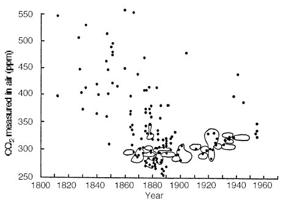

Même s'il est indispensable, le doute est douloureux pour un scientifique. Il en est ainsi, tout particulièrement, quand il observe que les résultats rapportés dans la littérature scientifique diffèrent franchement les uns des autres et ceci d'autant plus, quand les courbes de variations de telle ou telle donnée, abondamment publiées et médiatisées à l'extrême, s'écartent notablement de tout ce que l'on sait déjà et que l'on tient pour avéré.
Je vais vous en donner un exemple assez difficile à croire tant les données publiées ici ou là, divergent et prétendent apporter des "preuves" adhoc à certains discours plus ou moins orientés.
Comme d'habitude, je m'abstiendrai de porter des critiques "ad hominem" (c'est à dire, contre les personnes) mais plutôt "ad rem" (au sujet des faits). Ce sera à vous de juger ! Mais, je dois dire que le rapprochement de ces diverses données, totalement divergentes et réalisées par experts patentés, donnent vraiment à réfléchir !
Reprenons le discours ambiant -la pensée unique- abondamment propagée par le GIEC, le Groupe Intergouvernemental pour l'Etude du Climat (IPCC en anglais). L'alarmisme actuel en matière de climat provient du réchauffement de la planète qui résulterait du gaz carbonique (CO2 à ne pas confondre avec le gaz mortel CO, le monoxyde de carbone) généré par les activités humaines et, pour cela, baptisé d'anthropogénique. Le raisonnement en vigueur qui prône l'élimination ou la mise en boite du CO2, (désormais qualifié par certains de "polluant" alors que ce gaz est indispensable à la vie), repose fondamentalement sur la corrélation supposée entre deux courbes désormais célèbres.
Voici ces deux courbes, célèbres entre toutes, et qui figurent dans les rapports du GIEC depuis 1998. Celle de droite n'est plus mentionnée dans le dernier rapport de février 2004 (AR4) suite aux nombreuses critiques et aux analyses exhaustives dont elle a fait l'objet... (voir ici)
| La courbe ci-dessus a été obtenue à partir de prélèvement de carottages glaciaires jusqu'en 1960, date à partir de laquelle on a commencé à mesurer les données directement à partir d'une station située sur le volcan Mauna Loa (Hawaï, encore en activité). Dans les carottages glaciaires, réalisés jusqu'à de grandes profondeurs, on prélève les minuscules bulles de gaz piégées dans la glace. La proportion de CO2 régnant dans l'atmosphère à cette époque, est analysée directement à partir de ces bulles de gaz. La profondeur de la partie de la carotte analysée donne l'échelle des temps. L'utilisation de cette méthode de carottage pré-suppose que la proportion de CO2 piégé dans la glace, n'a pas varié au cours du temps. Cette hypothèse est largement remise en question par de nombreux spécialistes de l'analyse du CO2 au cours de âges. Comme vous allez le voir ci-dessous, les résultats des carottages glaciaires diffèrent totalement des mesures directes qui ont été faites, par voie chimique, depuis le début du XIXème siècle. | Ci-dessus, la célèbre courbe en "crosse de hockey" de Michael Mann et ses collaborateurs (publiée en 1998 dans Nature). Elle a été obtenue par une collection de mesures de dendrochronologie (cernes des différents arbres) pour les neuf derniers siècles. Les mesures du siècle dernier sont des mesures directes que l'on a purement et simplement "recollé" aux mesures précédentes de dendrochronologie. Comme cela est expliqué à la fin de la page, cette courbe a fait l'objet de nombreuses critiques et d'un rapport d'audit effectué par un panel de scientifiques indépendants (rapport Wegman) qui l'ont discréditée. Pourtant, elle a figuré dans tous les rapports du GIEC jusqu'à celui de 2007 (où elle a été omise, sauf les dernières années). Elle a figuré jusqu'à 5 fois dans le même rapport ! Ce qui est extrêmement curieux, c'est qu'elle est en complète contradiction avec une autre courbe, universellement adoptée et publiée elle aussi par le GIEC qui montre (voir courbe ci-dessous) la présence indubitable du petit âge glaciaire (très froid autour de 1700) et de l'optimum médiéval (très chaud) autour des années 1000-1200. La revue Nature dans laquelle la courbe en crosse de hockey avait été publiée a demandé un rectificatif... sans résultat semble t'il. On observe sur la courbe en crosse de hockey que la température aurait progressivement diminué depuis l'an mille jusqu'en 1900 où elle aurait brusquement commencé à croître. C'est tout à fait contraire à toutes les autres observations. Alors pourquoi a-t'elle servi de "preuve" de base pour le GIEC depuis le début alors que les scientifiques et les historiens savent qu'elle est résolument erronée ? |
Il est exact que si l'on se réfère aux deux courbes ci-dessus -et beaucoup l'ont fait-, notamment les journalistes crédules, les écologistes orientés et sans doute les politiques- le constat ne peut qu'être alarmant. A titre personnel, je me souviens qu'un de mes collègues qui avait attiré mon attention, il y a quelques années, sur la courbe en "crosse de hockey", était bouleversé par ce résultat publié dans Nature qui est, en principe, une revue au dessus de tout soupçon. Au vu de cette courbe, je lui avais demandé ce qu'étaient devenus le petit âge glaciaire et l'optimum médiéval. Je n'avais pas obtenu de réponse, bien entendu.
Si l'on établit une corrélation mentale entre les courbes de croissance du CO2 dans l'atmosphère et l'élévation de température de la crosse de hockey, on ne peut qu'en tirer des conclusions dramatiques. C'est ce qu'ont fait et continuent à faire, le bureau du GIEC (mais pas tous les scientifiques du GIEC), les écologistes, Al Gore, Nicolas Hulot, Stern etc. Bref tous ceux qui, pour une raison ou pour une autre, ont été convaincus et prônent la limitation des émissions de CO2 dans l'atmosphère quitte à brider gravement le développement industriel des pays développés et, surtout et c'est encore plus grave, des pays en voie de développement. Vous le voyez, tout vient du rapprochement de ces deux courbes ...
Donc, en résumé, retenons bien ceci :
Ces deux courbes constituent la base de l'argumentation des tenants de l'effet de serre produit par l'activité humaine. C'est à partir de ces "données" que l'on affirme, par exemple, que le taux de CO2 contenu dans l'atmosphère était résolument constant (à un taux de 280 ppm, parties par million en volume) pendant le millénaire précédent et qu'il s'est brusquement mis à augmenter depuis le début de l'ère industrielle (à partir de 1850) jusqu'à atteindre 384 ppm de nos jours...Fait, paraît-il, sans précédent. C'est aussi à partir de ces données que l'on affirme que la température du globe s'est mise à croître tout aussi brusquement à partir en 1850 alors qu'elle n'aurait presque pas varié dans les dix siècles précédents. On en déduit immédiatement que tout est de la faute de l'industrie et donc de l'homme ! C'est le CO2 qui "doit" avoir provoqué le réchauffement. Mea Culpa!
Sans doute, sans doute ! -se dit un scientifique prudent et circonspect (et qui en a vu bien d'autres !)- mais ces courbes sont-elles exactes ? Corrélation n'est pas raison et corrélation n'est pas preuve de causalité ! D'autre part, La variation de température et la variation de la proportion de CO2 dans l'atmosphère sont-elles correctement représentées par ces deux graphes (comme l'on dit maintenant, pour faire plus savant) ? Un scientifique prudent et circonspect qui a de l'expérience et qui n'admet rien que ce dont il est certain parce que cela été vérifié à de multiples reprises et par plusieurs techniques différentes, se pose des questions. Et, il a bien raison. En réalité, ces deux courbes sont en contradiction formelle avec de nombreux autres résultats qui sont au moins aussi (sinon plus) fiables ! Autrement dit, ces deux courbes qui servent de base à tous les discours actuels en matière de réchauffement climatique sont largement sujettes à caution ! Je vais vous le démontrer....
Examinons tour à tour, les données qui concernent, d'une part, l'évolution de la température et, d'une part, l'évolution de la concentration en CO2 de l'atmosphère au cours des âges.
La température de l'an mil à nos jours :
La tâche est aisée puisque les données de la "crosse de hockey" ont fait l'objet de nombreuses enquêtes effectuées par de nombreux scientifiques qui ont refait tous les calculs de M. Mann et ses collaborateurs et examiné cette courbe sous tous ses angles (voir par exemple ici en français ou le rapport Wegman (résumé ici)). Le résultat est sans appel : Cette courbe est erronée ! Allez voir plus de détails ici .Vous trouverez ci-dessous ( à droite) la courbe correcte qui donne les variations de température de la planète depuis l'an mil. Cette courbe correcte a d'ailleurs été acceptée (sans doute à regret) par le GIEC qui a maintenant renoncé à publier une fois de plus la fameuse "crosse de hockey" dans son intégralité alors qu'elle lui a pourtant servi pour répandre d'inquiétantes nouvelles. Mais il a été très dur et très long de rétablir la vérité ! Certains d'ailleurs continuent à défendre encore la courbe précédente peut-être parce que l'abandonner enlève de très sérieux arguments à ceux qui soutiennent l'idée du réchauffement anthropogénique. D'autre part, plusieurs chercheurs ont reconstruit la courbe des températures depuis l'an mil en utilisant d'autres données dendrochronologiques (tel J. Esper Institut Fédéral de recherche Suisse, en 2002) et surtout une méthode d'analyse correcte (qui ne l'était pas dans le cas de la crosse de hockey). Ces derniers ont bien retrouvé le petit âge glaciaire et l'optimum médiéval avec une courbe plus réaliste qui n'a rien à voir avec la crosse de hockey du GIEC... Bref, voici la courbe des températures généralement admise (à droite) et publiée par le GIEC (IPCC en anglais) jusqu'en 1998. Pour bien montrer la différence, je rappelle la courbe en "crosse de hockey" de Michael Mann et al. et celle publiée par le même GIEC depuis 1999, à gauche.
Ces deux courbes sont franchement contradictoires. La courbe de droite (amplitude d'environ + et - 2°C en température) bénéficie d'une infinité de confirmations de toutes sortes. Les récits historiques très nombreux et bien documentés rapportent que les Vikings colonisaient le Groenland à l'époque de l'optimum médiéval (mediaeval warm period) tandis que la vigne était cultivée dans le nord de l'angleterre. Les vikings ont quitté les Groenland vers 1348 repoussés par les glaces qui commençaient à envahir cette terre autrefois fertile. Pendant le petit âge glaciaire (little ice age), la Seine et la Tamise étaient gelées et l'on y tenait boutiques en hiver ! Etc. Les récits historiques, les dessins, la phénologie (étude des croissance des plantes comme la vigne décrites par Leroy Ladurie), tous racontent la même histoire qui correspond à cette courbe. Ces périodes sont très bien documentées et leur existence est indubitable. On en a retrouvé des traces dans le monde entier (Argentine, Etats-Unis, Afrique du Sud, Australie, Tasmanie, Japon, Chine, Kenya, Mauritanie, mer des Antilles etc.), contrairement à ce qu'affirment les quelques supporters restants de la crosse de hockey. C'était bien des événements mondiaux. Alors comment le GIEC et notamment, Sir Houghton (ci-contre, celui-là même qui a dit " Si nous n'annonçons pas des catastrophes, personne ne nous écoutera !") a t'il pu faire paraître une courbe de variation des températures qui gomme tous ces événements qui devraient apparaître en très grand à l'échelle de la courbe en "crosse de hockey" en contredisant ainsi ce que tout le monde savait et que le GIEC, lui-même, avait officiellement publié jusqu'en 1998 ? Cette dernière courbe affirme même un léger maximum de température en 1750, alors que toutes les autres données nous disent, au contraire, que c'étaient des années glaciales !
C'est pour le moins bizarre, sinon inquiétant ! Pour le GIEC, depuis 1998, brusquement, la connaissance du passé n'existe plus ! On le comprend quand on sait que le but affiché de cet organisme est de montrer que tout ce qui se produisait au XXème et XXIème siècle était totalement inhabituel dans l'histoire de la terre et qu'il ne s'était rien passé avant l'ère industrielle.
Maintenant se pose une question : Le GIEC a t'il agi de la même manière en ce qui concerne la courbe de variation du CO2 dans l'atmosphère, toujours pour "prouver" que la croissance du CO2 au XXème siècle est totalement nouvelle dans l'histoire du globe et qu'avant l'ère industrielle, il ne s'était rien passé et que le taux de CO2 dans l'atmosphère était constant à 280ppm ? Voyons en détail ce que nous dit la littérature scientifique à ce sujet. Le CO2 qui est l'agent N°1 du cycle du carbone a toujours passionné les scientifiques et ceci depuis très longtemps.
Courbes de variations du CO2 dans l'atmosphère selon les différents travaux scientifiques...
Rappel de la courbe de croissance (de 1000 à 2000) du CO2 dans l'atmosphère telle qu'elle a été publiée par le GIEC en 2001. D'après cet organisme, la quantité de CO2 dans l'atmosphère est restée presque stable à une valeur autour de 280ppm ( partie par million en volume), puis a connu une augmentation continue depuis 1850, le début de l'ère industrielle. D'où la conclusion que l'homme en est responsable. La quantité de CO2 dans l'atmosphère est actuellement de 384ppm toujours d'après le GIEC. |
Ce graphe (de 1800 à 1970) donne une comparaison entre les mesures obtenues par les carottages glaciaires (jusqu'en 1960) prolongées par les mesures directes sur le volcan de Mauna Loa (courbes en mauve) utilisées par le GIEC et les résultats (en bleu foncé) de 90000 mesures effectuées par un grand nombre de chercheurs, dans différents pays, et publiés dans 173 revues scientifiques. Ces mesures (lissées sur cinq ans) sont obtenues par diverses méthodes de titrimétrie (dosage chimique direct du CO2 par précipitation en carbonates avec des bases telles que KOH ou NaOH et analyse quantitative) avec une précision variant entre 6 et 3 ppm, bien suffisante pour ces courbes. Ce graphe est extrait de l'énorme travail de compilation réalisé et publié (2006-2007) par un chercheur de Freiburg (Ernst-Georg Beck, voir la version courte de son article ici, en pdf. Pour les références et des compléments à cet article, voyez ici. La version complète est ici). Les mesures rapportées ici sont effectuées à 2m au dessus du sol. La courbe des mesures directes (en bleu foncé) diffère notablement de la courbe de gauche, et de courbes (en mauve) rapportés par le GIEC. Celle publiée par le GIEC ne montre aucun "accident" notable entre 1810 et 1970 avec une valeur moyenne de 300 ppm. Par contre, les mesures directes ci-dessus donnent des valeurs en moyenne nettement plus élevées (environ 340 ppm) et surtout montrent que la proportion de CO2 dans l'atmosphère a beaucoup varié pendant cette période et a plusieurs fois largement dépassé la valeur actuelle de 384ppm, (dont on nous dit qu'elle est catastrophique). Ainsi en 1823 (440ppm), en 1855 (390ppm) et en 1942 (440ppm). A noter que la date de 1942 correspond à un pic de température (avant le refroidissement jusqu'en 1975) que n'a pas vu la crosse de hockey. Ce pic de CO2 et de température ne peuvent être attribués à la seconde guerre mondiale car la montée s'est amorcée en 1925 d'une part et l'activité industrielle a beaucoup augmenté après 1942, d'autre part. On note aussi que le pic de température ne suit pas mais a précédé l'augmentation du CO2 tout comme d'ailleurs dans les graphes rapportés ici. Addendum 24 Mars 2010: En réalité, le taux de CO2 varie considérablement avec l'altitude et, surtout avec les vents. Beck et Massen ont réalisé un travail intéressant mentionné sur le blog de Pielke Sr , montrant que les mesures anciennes, effectuées à 2m au dessus du sol peuvent et doivent être corrigées pour tenir compte du vent qui favorise le mélange de l'atmosphère, si l'on veut se replacer dans les conditions de Mauna Loa. Il n'en reste pas moins que l'absorption IR se fait en quelques dizaines de mètres au dessus de la terre.... (Richard Lindzen). Le travail de Massen et Beck est disponible ici. |
La comparaison de ces deux courbes de concentration du CO2 dans l'atmosphère (celle du GIEC et celle des résultats compilés par E-G Beck) laisse rêveur, tant elles sont différentes....ce qui apparaît immédiatement en regardant les courbes mauves et la courbe bleu marine du graphe de droite précédent. Honnêtement, je ne vois que quatre solutions pour expliquer ces différences tout à fait étonnantes et qu'il est exclus de pouvoir faire rentrer dans les marges d'erreurs expérimentales bien connues, du moins en ce qui concerne les mesures chimiques (3 à 6 ppm). Comme on le verra ci-dessous, les marges d'erreurs des mesures par carottages sont mal connues.
Carottages glaciaires et mesures directes du taux de CO2 dans l'atmosphère ? Le bon choix ?
L'histoire de la théorie des gaz à effet de serre :
Pour comprendre ce qui a pu se passer, il faut remonter un peu dans l'histoire, d'environ un siècle. En 1896, Svante Arrhénius suivant les suggestions d'autres prédécesseurs (Fourier, par exemple) émit l'idée des gaz à effet de serre qui pourraient réchauffer la planète. C'est Arrhénius qui proposa la première formule (en logarithme de la concentration) qui est toujours utilisée de nos jours avec un coefficient sur lesquels se disputent encore les chercheurs. En 1896, la trouvaille d'Arrhénius fut abondamment critiquée et rejetée au profit de la théorie des cycles solaires de Milankovitch qui, elle, permettait de comprendre les variations de températures qu'avait connue la terre dans les siècles passés (dont le célèbre âge glaciaire). La théorie de l'effet de serre d'Arrhénius s'endormit dans les placards pendant environ 42 ans... A partir de 1938, un ingénieur anglais nommé G. S. Callendar, ressuscita la théorie d'Arrhénius et devint ainsi le premier promoteur de la théorie actuelle des gaz à effets de serre et notamment du CO2. Il publia des courbes de concentration de ce gaz dans l'atmosphère en partant de l'idée que l'industrialisation devait avoir changé la concentration de ces gaz et que cela pourrait réchauffer la planète. Callendar ne disposait, à son époque, que de l'énorme quantité de mesures directes du CO2 effectuées par voie chimique par ses prédécesseurs. Il publia la première courbe qui est la mère des courbes du GIEC actuelles en sélectionnant quelques données parmi le très grand nombre de résultats dont il disposait. Callendar défendait une idée :Il fallait que la concentration du CO2 "ait l'air" de monter progressivement avec l'industrialisation et si possible en partant d'une valeur bien constante, tout comme le GIEC de nos jours. Sinon, c'était l'échec de sa théorie ! Alors, comment Callendar fit-il son choix parmi la grande quantité de données dont il disposait ?
Un groupe de chercheurs (S. Fonselius et al, Tellus, 1956, vol. 8 page 176) chercha à le savoir et recompila toutes les données dont disposait Callendar à cette époque et les disposa dans une figure analogue à celle qui figure sur la droite. Cette figure est extraite d'un article tout récent de Z. Jaworowski (voir plus bas).
Sont encerclés les mesures que Callendar sélectionna pour construire sa courbe qui tendaient à prouver que le CO2 augmentait progressivement dans l'atmosphère du fait de l'activité humaine. On y retrouve de nombreux points autour de 280-300ppm qui est la valeur officielle qui figure dans tous les rapports du GIEC actuels. On se demande encore pourquoi Callendar écarta systématiquement toutes les mesures qui donne des concentration élevées et qui allaient jusqu'à 550 ppm...Lorsque Callendar présenta son papier devant la Royal Meteorological Society, en 1938, il fut sévèrement critiqué, pour ces choix sans validation scientifique évidente et pour le moins curieux mais qui allaient dans le sens de ce qu'il voulait prouver. Voici un exemple d'analyse des choix de Callendar publiée en 1955, par Giles Slocum (pdf). Malgré ces critiques fondées, ce sont pourtant ces données encerclées qui allaient servir de base pour le futur GIEC. Les supporters de la théorie de l'effet de serre anthropogénique nous disent que Callendar avait fait le bon choix puisque ces données rejoignent celles que donnent les carottages glaciaires modernes...Voire ! Nous allons maintenant parler de ces fameuses mesures obtenues par carottage dont le GIEC s'est fait une spécialité.
Les mesures de la concentration du CO2 par carottage glaciaire :
Comme on le voit tous les jours et bien que ces mesures diffèrent très nettement des mesures directes qui avaient cours jusque dans les années 60, le GIEC ne retient pour toutes ses publications, pour les périodes avant 1960, que les mesures obtenus par cette technique. Le GIEC a donc fait un choix décisif qui corrobore parfaitement son alarmisme en matière de gaz à effets de serre même au prix d'une contradiction flagrante avec les mesures directes par voie chimiques. A noter que les rapports successifs du GIEC se gardent bien d'évoquer cette grave question...
La technique de mesure de la concentration du CO2 par carottage glaciaire :
Elle est très simple et très facile à comprendre : On enfonce un trépan creux (généralement un tube en métal de 10 cm de diamètre) verticalement dans la glace des continents gelés comme l'arctique ou l'antarctique. Il faut savoir que dans ces zones là, l'air est généralement très sec et que la pluviométrie (ou plutôt la neige) est très peu abondante. Ainsi, en perçant jusqu'à une profondeur limitée (quelques centaines ou quelques milliers de mètres par exemple), on peut récupérer les différentes couches de glaces (issues des faibles quantités de neige déposées chaque année) qui se sont enfouies depuis des époques très reculées... jusqu'à quelques millions d'années ! Les célèbres carottages de Vostok (dans l'antarctique) que j'évoque dans cette page, relèvent de cette technique. Lorsque le carottage a été effectué, on récupère le contenu du trépan et on le conserve à très basse température (celle qui règne sur les continents gelés suffit ), puis on les découpe en tranches que l'on va ensuite analyser.
Ces extraits de carottes de glace contiennent, sous forme de petites bulles, de minuscules inclusions de différents gaz ( CO2, O2 etc. et divers isotopes) que l'on suppose refléter la composition de l'atmosphère de l'époque correspondant à la profondeur ou a été récupéré l'échantillon de glace. Il va de soi que l'échelle du temps est directement fonction de la profondeur d'où est extraite la carotte. Plus c'est profond, plus c'est éloigné dans le temps, évidemment.
La France est certainement un des leader sinon le leader en matière de carottages glaciaires. Cette technique est-elle au dessus de tout soupçon ?
NON, loin de là, nous répondent de nombreux chercheurs dont un des plus éminents et des plus connus est Zbigniew Jaworowski (photo ci-dessous à droite, utilisant une colonne échangeuse d'ions dans l'Alaska); Jaworowski est un chercheur Polonais qui a passé la majeure partie de son existence à pratiquer de forages glaciaires et qui connaît parfaitement cette technique. Ainsi, a t'il publié depuis les années 1990, une bonne dizaine d'articles dans des revues reconnues, destinés à attirer l'attention sur les nombreuses erreurs d'interprétation que l'on peut faire en utilisant les carottages glaciaires dont le GIEC a fait sa première et presqu'unique technique de mesure. En particulier Jaworowski, attire notre attention sur le fait que personne n'a encore pu prouver que les gaz extraits des carottages reflétaient exactement la composition de l'air ambiant de l'époque correspondant à la carotte. Pas plus d'ailleurs que la composition de l'air intersticiel dans les neiges récentes. Ainsi lorsque l'on cherche à "recoller" les résultats correspondants aux périodes les plus récentes avec les mesures directes, éprouve t'on bien des difficultés. On est, en général, obligé de supposer que l'air piégé dans le carottage est beaucoup plus récent ( de 90 à 200 ans !) que la glace qui l'entoure et donc que ne l'indiquerait la profondeur du forage ! C'est gros mais c'est pourtant ce que l'on fait, en "adaptant" selon les occasions. Si vous voulez en savoir plus, lisez cet article très documenté avec de nombreuses références. En outre, Jaworowski relève les erreurs inhérentes à cette technique. Entre autres :
En résumé, Zbigniew Jaworowski (décédé en Nov 2011) , grand connaisseur dans la matière et bardé de diplômes; estime que les carottages glaciaires sous estiment généralement la concentration de CO2 présent dans l'atmosphère et ceci d'autant plus que le carottage est plus profond (durée de stationnement plus longue et plus forte pression). Reportez vous à la courbe en mauve de la figure de droite donnant la proportion de CO2 par voie chimique. Elle indique en effet que la proportion de CO2 mesuré par carottage (jusqu'en 1960) est toujours très faible et monte progressivement et lentement ce qui est en contradiction absolue avec les relevés directs du CO2 par voie chimique.
______________________________________________________________________________________________________________________
8 Fèv. 2009 : Stomates des plantes et taux de CO2 : Toujours sur le même sujet, en 2002, une étude intéressante a été publiée dans les Proceedings of the National Académie of Sciences (USA) (2002, septembre 17 ; 99(19): 12011-12014)(auteurs : Friederike Wagner, Bent Aaby, et Henk Visscher) (source) Cette étude utilise une propriété particulière des stomates des végétaux. Ces stomates sont, en réalité, des ouvertures superficielles situées sur les feuilles des végétaux. Ces stomates se multiplient ou réduisent leur nombre en fonction de la proportion de CO2 contenu dans l'air ambiant. Ainsi, l'analyse des stomates de plantes fossilisées permet-elle, moyennant étalonnage préalable, de connaître le taux de CO2 au moment précis de leur fossilisation. Ceci constitue une mesure plus directe que l'étude des bulles d'air prisonnières des carottes de glace qui, elles, ont besoin de plusieurs décennies pour se fermer, sans compter les problèmes délicats analysés par Jaworowski ci-dessus.
Les courbes représentées sur le graphe ci-contre couvrent la période allant de 8700 ans à 6800 ans BP (BP = Before Present, c'est à dire avant 1950 qui est défini par convention), soit une période allant de l'an -6750 à -4850, c'est à dire une durée de 1900 ans.
Les auteurs de cet article ont comparé les données obtenues à partir des forages glaciaires effectué sur le Dome de Taylor an Antarctique (courbe de gauche- données obtenues ici) prisées par le GIEC, avec celles obtenues à partir de fossiles de B. Pendula et de B. pubescens (sortes de bouleaux) provenant du Lac Lille Gribso au Danemark (courbe de droite).
La chronologie a été effectuée avec une datation au carbone 14 dont les marqueurs sont indiquées par les flèches situées sur l'axe des ordonnées. La partie en grisé correspond à la période froide située autour des années 8200 BP.
Comme on le constate immédiatement sur ce graphe tiré de l'article cité ci-dessus, les résultats de l'étude des stomates fossiles diffèrent notablement des données issues des carottages du Dome Taylor. Ces dernières présentent une évolution lente et continue, même pendant la période froide autour de 8200 BP, ce qui est assez étrange. Par contre, les valeurs trouvées dans les stomates montrent de notables variations.
Enfin, la valeur moyenne du taux de CO2 trouvé dans les carottages(265 ppm) est nettement inférieure à celle trouvée dans les stomates (environ 300 ppm).
Compte tenu des marges d'erreurs, la valeur maximale du taux de CO2, vue dans les stomates et vers 7800 BP, varie de 305 à 338 ppm. A noter que les valeurs trouvées dans l'étude des stomates correspondent assez bien à celles trouvées par Jaworowski et Beck, à partir de mesures chimiques faites au 19ème siècle, période pendant laquelle l'activité industrielle carbonée était négligeable.
Les auteurs de cet article expliquent aussi que la baisse du taux de CO2 atmosphérique durant cette période, correspond à un refroidissement "concomitant" de la température des océans .Ceci est particulièrement net au vu l'abaissement du taux de CO2 observé pendant le "pic" de refroidissement autour de 8200 BP. Ce qui est conforme avec la loi fondamentale de la physique qui impose que le CO2 soit plus soluble dans les océans plus froids.
...Tout ceci semble avoir échappé au mesures du taux de CO2 par carottage glaciaire. Tout comme d'ailleurs le taux élevé du CO2 dû au réchauffement des années 30-40, vu par les mesures directes des chimistes mais que les carottages n'ont pas détecté, non plus.
Autrement dit, le choix qu'a fait le GIEC de privilégier les mesures de carottages glaciaires (jusqu'en 1960, avant les mesures directes de Mauna Loa) ne pouvait conduire qu'à une sous estimation du taux de CO2 pré-industriel et donc, par comparaison, à une surestimation de l'apport de CO2 humain depuis la période industrielle. Jaworowski voit cela comme une sorte de deuxième crosse de hockey qui exagérait le réchauffement récent en éliminant l'optimum médiéval, mais pour le CO2 cette fois-ci.
Alors que pouvons nous en conclure ???
 Conclusion : Il existe des doutes sérieux quant à l'exactitude des deux courbes maîtresse du GIEC, démontrant, selon lui, l'existence d'un effet de serre anthropogénique. D'autres données que les siennes indiquent qu'aussi bien la température que le taux de CO2 ont été souvent plus grands dans la passé que les valeurs actuelles, et que ces valeurs n'étaient pas corrélées à l'activité humaine.
Conclusion : Il existe des doutes sérieux quant à l'exactitude des deux courbes maîtresse du GIEC, démontrant, selon lui, l'existence d'un effet de serre anthropogénique. D'autres données que les siennes indiquent qu'aussi bien la température que le taux de CO2 ont été souvent plus grands dans la passé que les valeurs actuelles, et que ces valeurs n'étaient pas corrélées à l'activité humaine.
Je vous laisse le soin de vous faire votre propre opinion en fonction des données existantes.
Cependant, constatant ces faits, plusieurs de mes collègues, spécialistes de ces questions climatiques n'y vont pas par quatre chemins.
Voici les titres de quelques articles qui sont parus sur ces sujets, c'est à dire sur la critique de la courbe de variation de la température (crosse de hockey) d'une part et sur la courbe de variation du CO2 d'autre part, toutes deux publiées et abondamment diffusées par le GIEC :
| Marcel Leroux | Réchauffement global : une imposture scientifique ! | Fusion, N° 95, Mars-avril 2003 |
| Z. Jaworowski | CO2 : Le plus grand scandale scientifique de notre époque | EIR Science, March 16, 2007 |
| Z. Jaworowski | Une autre fraude sur le réchauffement global dénoncée (CO2) | 21st Century, Spring 2007 |
| John Daly | Falsification de l'histoire climatique pour "prouver" le réchauffement global | Fusion N° 87, Septembre-octobre 2001 |
Édifiant, n'est ce pas ? Maintenant, soyons patients : Il faut attendre que la communauté scientifique réagisse devant les données toutes récentes, publiés par Georg-Ernst Beck, en 2007, sur la concentration du CO2 mesurée par voie chimique, comme elle l'a fait lors de la publication de la "crosse de hockey" pour les températures. Vous trouverez ici un commentaire récent par un expert, Paul William, qui reconnaît qu'il y a un problème dans le choix de Callendar et du GIEC. Ainsi et si les données de Beck ne sont pas vigoureusement démenties et déboutées -et je ne vois pas comment elles le seraient-, il y a du souci à se faire pour l'avenir du GIEC et notamment du groupe I de cet organisme qui est chargé de l'établissement des données objectives du réchauffement climatique, autrement dit des courbes qui précèdent. Cependant, par les temps qui courent et compte tenu de l'énorme importance qu'a pris le"réchauffement climatique" prôné par le GIEC et du "big business" qui s'est créé autour de ce concept, il pourrait très bien ne rien se passer...
Tant pis pour le débat scientifique ! et la Vérité sur la teneur réelle de l'atmosphère en CO2 et la "vraie" courbe des températures !
Dans le contexte actuel, on peut s'attendre à tout. C'est ainsi, par exemple, que Mike Hulme, professeur à l'Université d'East Anglia, soutient l'idée qu'il faut aller dans le sens de ce qu'il appelle la "post normal science", ce qui le conduit à affirmer sans hésiter que " Climate change is too important to be left to scientists". En français "Le changement climatique est trop important pour être laissé aux scientifiques"...Ce qui signifie en clair :
"Peu importe la Vérité Scientifique sur le changement climatique". Cela nous rappelle quelques déclarations fracassantes du même tonneau (voir ici). C'est, au moins, une manière astucieuse de se prémunir contre les déconvenues qu'apporte chaque jour la science, aux tenants des gaz à effet de serre anthropogénique et au "big business" qui va avec !
Mais avec quelles conséquences catastrophiques ? (voir remèdes)
Si vous voulez en savoir beaucoup plus sur les thèses en présence sur le réchauffement climatique, allez voir ici.